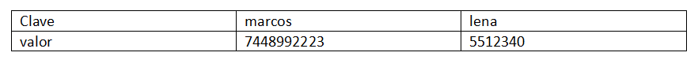
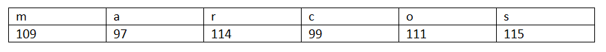
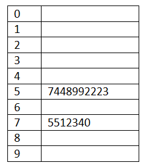
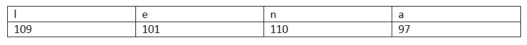
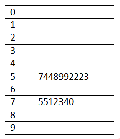

Aplicaciones en computación
Criptografía
La criptografía es el estudio de los métodos para enviar mensajes secretos. Se trata de que un mensaje denominado como “texto simple” pase a un “texto cifrado”. El receptor del texto cifrado utiliza “descifrado” para convertir el texto cifrado a un texto simple.
Actualmente existen distintos algoritmos para la codificación de mensajes, como lo es el cifrado César que consiste en la sustitución de cada letra de un mensaje por otra letra que se encuentra un número fijo de posiciones más adelante en el alfabeto. El nombre de este método deriva del emperador romano Julio César, quien se dice lo utilizaba para comunicarse con sus generales.
Por ejemplo, si elegimos un desplazamiento de 3, la letra A se convierte en D, la letra B en E, y así sucesivamente. Este proceso se realiza para cada letra del mensaje, lo que resulta en un mensaje cifrado. El cifrado César es un ejemplo simple de criptografía de sustitución, donde cada letra del alfabeto se sustituye por otra letra.
Este algoritmo puede resultar no tan eficiente debido a que la decodificación es sencilla a comparación con la RSA (Rivest-Shamir-Adleman) que requiere de una metodología más compleja.
Algoritmo RSA
El sistema criptográfico RSA fue descubierto por Rivest, Shamir y Adleman en 1977 y es el primer algoritmo en utilizar una clave generada que se usa para asegurar la transferencia de datos a través de redes inseguras, como Internet. La base del algoritmo RSA se basa en la aritmética modular.
Conceptos básicos:
Clave Pública y Privada: En RSA, cada usuario tiene una clave pública y una clave privada.
Clave Pública: Se utiliza para cifrar mensajes.
Clave Privada: Se utiliza para descifrar mensajes.
Pasos Algoritmo:
Generación de Claves:
El usuario elige dos números primos grandes, p y q.
Calcula n = p*q, que es el módulo.
Calcula ɸ(n) = (p-1) * (q-1) , que es la función ɸ de Euler de n
Escoge un número e que sea coprimo con ɸ(n). Este será el exponente de cifrado y es su clave pública.
Calcula d como el inverso multiplicativo de e módulo ɸ(n) , es decir:
d ≣ e-1 (mod ɸ(n) ) Este será el exponente de descifrado y es su clave privada.
Cifrado:
Para cifrar un mensaje M, el usuario aplica la siguiente operación:
C ≣ Me (mod n)
Donde C es el mensaje cifrado.
Descifrado:
Para descifrar el mensaje cifrado C , el usuario aplica la siguiente operación:
M ≣ Cd (mod n)
Donde M es el mensaje original.
Nota: En este algoritmo n debe tener al menos 340 dígitos
La aritmética modular se utiliza en el proceso de cifrado y descifrado para garantizar la seguridad de la comunicación. El módulo n es la base de las operaciones, y las claves pública y privada se utilizan para cifrar y descifrar los mensajes de forma segura.
Algoritmo Hash
Una Tabla Hash o un Mapa Hash es una estructura de datos que asocia llaves (keys) con valores (values) utilizando una Función Hash; asimismo permite almacenar y recuperar datos de manera eficiente.
Componentes:
Tabla: Un arreglo donde se almacenen los datos.
Claves (keys): Elementos únicos que se utilizan para identificar los valores asociados.
Valores(values): Datos asociados a cada clave.
Función Hash: Una función que toma una clave y devuelve un índice en el arreglo donde se almacenará el valor correspondiente.
Funcionamiento
Para el funcionamiento de este algoritmo es necesario contar con una Función Hash que distribuya las claves de forma uniforme a través del arreglo y minimice las colisiones, las cuales sólo ocurren cuando una clave diferente se asigna al mismo índice.
Una Función Hash transforma una clave en un índice en la tabla hash. Para que este índice sea válido dentro del tamaño de la tabla (que normalmente tiene una longitud m), se usa la aritmética de residuos, ya que la Función Hash a menudo incluye un paso que calcula el residuo de la división de la clave por el tamaño de la tabla.
Ejemplo:
Tenemos contactos que guardar en un arreglo de 10 índices.

La Función Hash indica que se debe convertir cada letra a su valor ASCII para después sumar los valores y asignarlos a la Tabla Hash.
En el caso de marcos:

Posteriormente se suma: 109 + 97 +114 + 99 +111+ 115 = 645
Para asignarle un índice al valor del nombre en la Tabla Hash se hace uso de la aritmética de residuos. Se toma al número de celdas disponibles como el módulo, en este caso 10.
645 (mod 10) = 5
Por lo que el contacto de marcos será guardado en la posición 5 de la tabla Hash:

Para el contacto de lena:

Se suman los números que componen el nombre:
109 +101+110+97 = 417
Se le asigna un índice en la Tabla Hash:
417 (mod 10) = 7
Por lo tanto será guardado en la celda 7

Este procedimiento se repite en el caso de contar con más contactos para guardar en el arreglo. Cabe destacar que la Función Hash puede cambiar de acuerdo a las necesidades del algoritmo. Asimismo, existe la posibilidad de que dos claves pueden llegar a tener el mismo índice en la Tabla Hash, por lo cual hay estrategías específicas para el manejo de colisiones.
Hay varios métodos para manejar colisiones:
1) Encadenamiento: Cada índice de la tabla apunta a una lista enlazada de todos los elementos que se asignan a ese índice. Si ocurre una colisión, el nuevo elemento se añade a la lista enlazada correspondiente.
2) Direccionamiento Abierto: En lugar de utilizar listas enlazadas, este método encuentra otro índice en la tabla para almacenar el valor. Los métodos más comunes de direccionamiento abierto incluyen:
Sondeo Lineal (Linear Probing): Se busca secuencialmente el siguiente índice disponible.
Sondeo Cuadrático (Quadratic Probing): Se busca el siguiente índice usando un desplazamiento cuadrático.
Hashing Doble (Double Hashing): Se aplica una segunda función hash para determinar el paso de búsqueda.
Las Tablas Hash son útiles en el almacenamiento y la recuperación rápida de datos, siempre y cuando se utilice una Función Hash adecuada y se manejen correctamente las colisiones. Algunos de sus usos destacados están en la implementación de índices en bases de datos y almacenamiento de tablas de símbolos en compiladores.